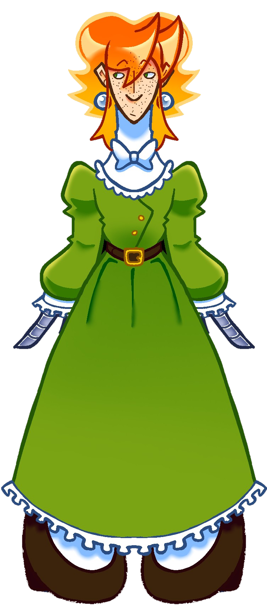
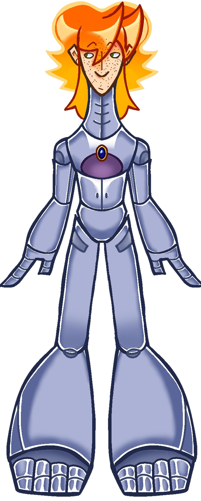

Descrição
Neco Schneider é um android consciente, ou pessoa metal, que teve seu passado apagado, sobrando apenas alguns fragmentos de memória. Ele é um agente espacial na Sei, entrando bem recentemente, tanto por ser um android, tanto por ser bem novo, tendo 19 anos de idade, sendo o membro mais novo do time.
Possui a habilidade de retrair suas mãos, deixando no lugar dois facões, usando essa habilidade nas missões, além disso ele também usa sua afinidade com a tecnologia para ajudar a, por exemplo, achar inimigos ou agentes do mesmo time.
É um grande amante da natureza e das artes, adorando estudar sobre essas duas áreas, porque elas o ajudam a entender como lidar com a sensação de estar vivo.
Por causa da perda da memoria, Neco não sabe quem ele realmente é, desde que acordou, ele vem procurando saber sobre seu passado e o que aconteceu pra estar aqui, se tinha uma família e amigos antes de entrar em estado de sono profundo. Porém, mesmo esquecendo de tudo, ele sente que existe algo na Sei que tenha a resposta para a sua perda de memória, e com a ajuda de Rita, sua amiga, ele consegue entrar na agência e trabalhar como agente.


